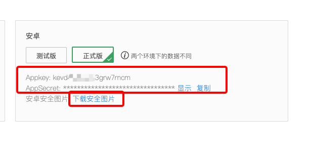

Integrate SDK
Preparation for Integration
Create Project
Build your project in the Android Studio.
Configure the root build.gradle
Add in repositories:
maven {
url "https://maven-other.tuya.com/repository/maven-releases/"
}
Configure the build.gradle
Add the following codes to the build.gradle file.
defaultConfig {
ndk {
abiFilters "armeabi-v7a"
}
}
dependencies {
implementation 'com.alibaba:fastjson:1.1.67.android'
implementation 'com.squareup.okhttp3:okhttp-urlconnection:3.12.3'
implementation 'org.eclipse.paho:org.eclipse.paho.client.mqttv3:1.2.0'
implementation 'com.tuya.smart:tuyasmart:3.15.0-beta3'
implementation 'com.tuya.smart:sweeper:0.1.0-beta1'
}
repositories {
mavenLocal()
jcenter()
google()
}
[Note]
- The Tuya Smart sdk solely supports the platform of armeabi-v7a architecture by default. Developer may refer to the GitHub if you need other platforms.
- After version 3.11.0, the so libraries of armeabi-v7a, arm64-v8a, armeabi platforms have been integrated into sdk. Please remove the relevant so-banks of sdk manually placed in the local, and use the default provided by sdk.
Integrated security image
Click the download button to download the security image.

Rename the downloaded security image to "t_s.bmp" and move it to the assets/ folder in the project directory.

Set the AndroidManifest.xml
Set appkey and appSecret in the AndroidManifest.xml file, and configure corresponding permissions, etc.
<meta-data
android:name="TUYA_SMART_APPKEY"
android:value="Appkey" />
<meta-data
android:name="TUYA_SMART_SECRET"
android:value="AppSecret" />
Proguard Configuration
please add this proguard configuration to proguard-rules.pro files.
#fastJson
-keep class com.alibaba.fastjson.**{*;}
-dontwarn com.alibaba.fastjson.**
#mqtt
-keep class org.eclipse.paho.client.mqttv3.** { *; }
-dontwarn org.eclipse.paho.client.mqttv3.**
-dontwarn okio.**
-dontwarn rx.**
-dontwarn javax.annotation.**
-keep class com.squareup.okhttp.** { *; }
-keep interface com.squareup.okhttp.** { *; }
-keep class okio.** { *; }
-dontwarn com.squareup.okhttp.**
-keep class com.tuya.**{*;}
-dontwarn com.tuya.**
SDK Init
TuyaHomeSdk.init(appliction); // Home sdk init
TuyaOptimusSdk.init(appliction); //Sweeper SDK init
ITuyaSweeperKitSdk
provides the data capability entrance of the laser sweeper and the download function of voice packets.
Call method:
ITuyaSweeperKitSdk iTuyaSweeperKitSdk = TuyaOptimusSdk.getManager(ITuyaSweeperKitSdk.class);